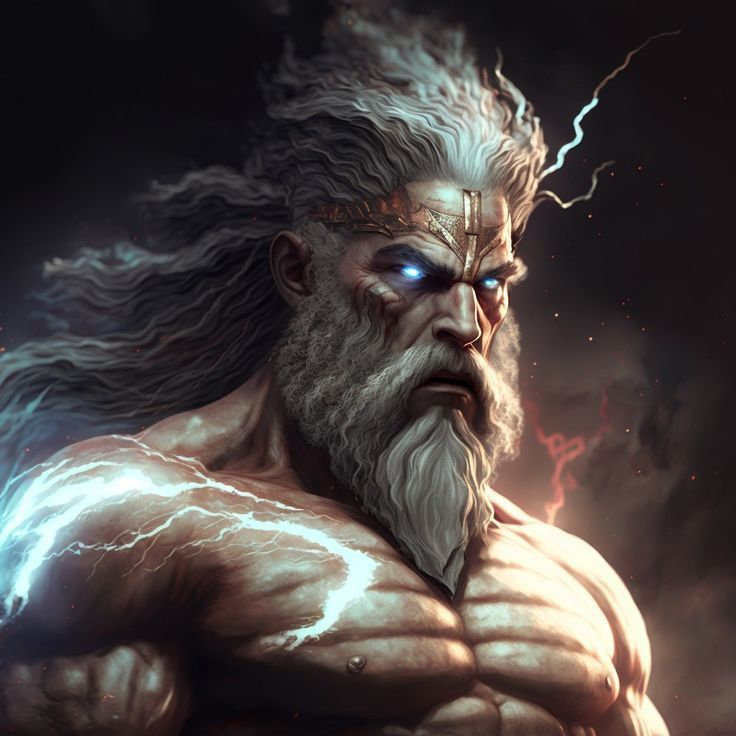
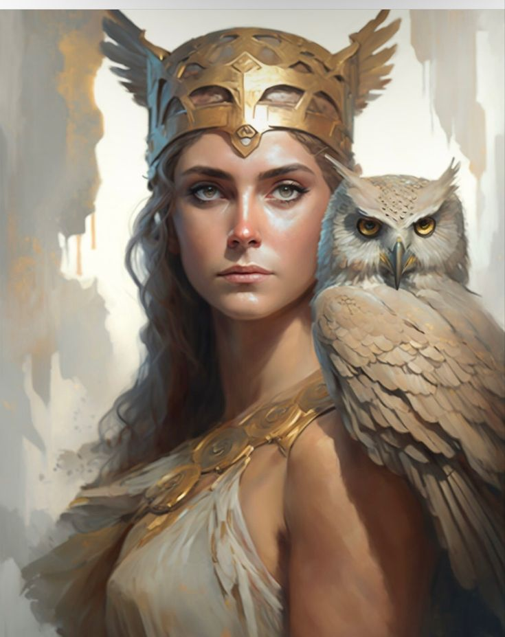

Bienvenido a la Mitología Griega
¡Bienvenido!
Explora los Dioses de la mitología griega.
Zeus
Zeus era el dios supremo en la mitología griega y el soberano del Olimpo, el monte más alto de Grecia, donde residían los dioses olímpicos. Era el hijo de Crono y Rea, y hermano de dioses como Hades, Poseidón, Hera, Deméter y Hestia. Zeus fue el líder indiscutible del panteón griego, gobernando sobre los demás dioses con autoridad y poder.
Los hermanos de Zeus


Poseidon
Poseidón era uno de los dioses principales en la mitología griega, hijo de Crono y Rea, y hermano de Zeus y Hades. Se le asociaba con el mar, los terremotos y los caballos. Poseidón gobernaba sobre los océanos y mares, siendo conocido como el Dios del mar, y era reverenciado tanto por marineros como por pescadores.
Hades
Hades era uno de los dioses principales en la mitología griega y gobernaba el inframundo, el reino de los muertos. Era hijo de Crono y Rea, y hermano de Zeus y Poseidón. A diferencia de sus hermanos, Hades no residía en el Olimpo, sino que gobernaba sobre el Tártaro, la región más profunda del inframundo.
Afrodita

Afrodita era la diosa del amor, la belleza y la fertilidad en la mitología griega. Se la consideraba una de las doce deidades olímpicas principales y era hija de Urano (el cielo) y surgida de las espumas del mar después de que los genitales de Urano fueran arrojados al mar. Su nacimiento en el mar le valió el epíteto "Afrodita Anadiómena" ("nacida de la espuma").
Ares

Ares era el dios de la guerra en la mitología griega, hijo de Zeus y Hera, y hermano de dioses como Atenea, Hebe y Hefesto. A diferencia de su hermana Atenea, que representaba la guerra estratégica y la sabiduría militar, Ares personificaba la brutalidad y la violencia en el campo de batalla
Atenas
Atenea era una de las diosas principales en la mitología griega, conocida por su papel en la guerra estratégica, la sabiduría, la artesanía y la justicia. Era hija de Zeus y nació de la cabeza de su padre completamente armada después de que este sufriera un dolor de cabeza y Hefesto le abriera la cabeza con un hacha. Atenea era reverenciada como una de las doce deidades olímpicas principales.
Hermes

Hermes era el dios mensajero en la mitología griega, conocido por su astucia, rapidez y versatilidad. Era hijo de Zeus y la titánide Maya, y se le asociaba con varias esferas de la vida, incluyendo el comercio, los viajeros, los ladrones, la elocuencia y la astucia.